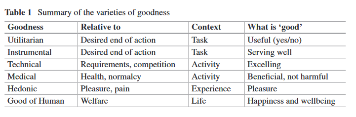
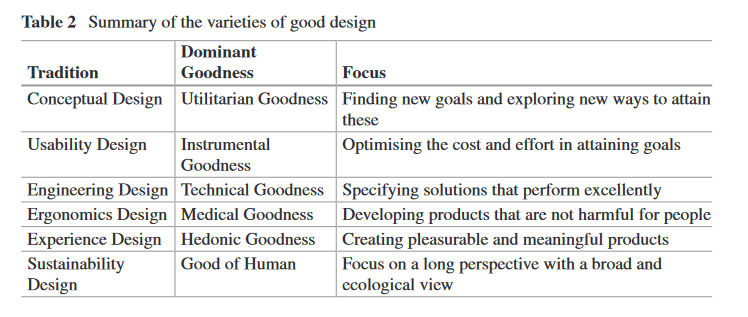

The title of this chapter is a paraphrase of Georg Henrik von Wright’s (1963) treatise The Varieties of Goodness. von Wright was a philosophical logician and analytic philosopher, and a student, close colleague, and successor of Ludwig Wittgenstein at the University of Cambridge. Wittgenstein’s influence is visible in the way von Wright approached the metaethical treatise of goodness by analysing the plurality of ways in which the concept of good is displayed and used in everyday language, i.e. how people talk about what is good. His position was a teleological one treating the intended ends of action and the actual consequences of action as grounds for establishing what goodness is. According to his teleological view of goodness, von Wright set the perceived beneficial and harmful consequences of action as the conceptual frame for the assessment of goodness. His position hence lies close to utilitarian ethics. Utilitarianism and its descendants in different forms of consequentialism build on assumptions about the moral rightness of actions depending on the (judged) value of the consequences (Sinnott-Armstrong 2015). The varieties of goodness presented by von Wright represents a pluralistic consequentialism, taking multiple meanings of ‘good’ into account.
Herbert Simon (1996, p. 55), who was a prominent design theorist, defined designing in terms of “devising action to transform existing situations into preferred ones.” This definition depicts designing as action to intentionally change the prevailing conditions, and it relates to the study of goodness through ends of action and consequences of action. This bears a clear resemblance to von Wright’s thinking on the notion of ‘good’. Designers’ action involves the introduction of designs, and it is essentially through the introduced designs that designers influence actual situations. The consequences that designs provoke when they are adopted into use can be evaluated through von Wright’s framework. von Wright also explicitly considered an example of design in his treatise: the design of a knife. Knives are the result of design action, and hence, when evaluating a knife one is actually evaluating an extension of how designers intentionally act upon the world.
von Wright’s approach to goodness relates to designing also in another way. Despite von Wright worked within analytic philosophy and studied the meaning and logic of value and goodness conceptually, his approach was unapologetically anthropocentric – the good of human resided at the centre. Human-centred design (or ‘user-centred design’) shares this premise, as it anchors the value of designs into how well they provide value to the people that become influenced by them. Hence, von Wright’s treatise appears to be based on very much the same concerns about value as the field of human-centred design, where our own contributions lie.
Our interest in studying von Wright’s work in connection with user-centred design stems from our own efforts in developing a framework for analysing the quality of designs (Arvola 2010; Arvola and Holmlid 2015) and analysis of how designers construct design concepts, i.e. expressions of possible ends of action (Ylirisku 2013; Ylirisku et al. 2015). We have also studied design processes in terms of the ‘situated knowing’ in conceptual designing (Ylirisku and Falin 2008) where designers anticipate the value that their designs bring to the people that will eventually use their designs. von Wright’s work on the varieties of goodness enables us to see how partial and biased most evaluation and support frameworks for design are. The different frameworks, however, may serve the purposes for which they were intended, and the objective of this chapter is not to evaluate how well suited they are, but rather, to promote a more holistic view on goodness based on von Wright’s work.
The chapter is organised so that the first part outlines von Wright’s varieties of goodness and the second part highlights different design traditions that appear to be biased towards one of the six kinds of goodness that von Wright (1963) originally outlined. We have chosen key works amongst the traditions to draw the connections to von Wright’s work, but we acknowledge that the traditions are more diverse than our portrayal of them in this chapter. We, nevertheless, argue that the different design traditions that we identify are grounded in different appreciations of good- ness, and that designers and design researchers can benefit from a more precise discernment of values that underpin design processes and design critique in these different traditions. Designers trapped in a single tradition, with one way of appreciating design, run the risk of overlooking the consequences of their work with regard to different values.
von Wright based his teleological study of the notion of ‘good’ on a conceptual analysis of the ways in which ‘good’ is used in language. This resulted in taxonomy of six ‘varieties’ of goodness, namely instrumental, technical, utilitarian, medical, hedonic goodness and the good of human1. In his treatise, von Wright related only some of the kinds of goodness explicitly to designed objects, especially to the design of knives. We shall continue this exploration further and deeper, relating each kind of goodness to design by covering different design practices, after we have summarised the varieties of goodness as presented by von Wright (1963).
Utilitarian goodness, according to von Wright, is a synonym for the concept of ‘useful’. To call something useful, von Wright (1963, p. 43) argued, is to say that it is “causally relevant to (the attainment of some) end of action.” In other words, when an object is said to be good for a purpose is to ascertain that the object can be used to serve this purpose.
An example that von Wright uses to illustrate usefulness is a knife that can be used as a hammer, because of its thick and heavy handle. It can be used for driving in nails, even though it is possibly not originally intended for the purpose. When people re-appropriate a design object, they are using the object for a purpose that was not likely associated for the object by its designers. Objects can be considered useful if they are ‘causally relevant’ for attaining the end of action, i.e. driving a nail down, when the consequences of the action taken with the design object serve the attainment of the desired end of action. The opposite of a useful design is one that cannot be used for a purpose. If that purpose is one that the design is intended to serve, it can be said to be useless.
According to von Wright (1963, p. 20) “to attribute instrumental goodness to some thing is primarily to say of this thing that it serves some purpose well.” Here we need to emphasise the last word – ‘well’ – which marks the demarcation of instrumental goodness from utilitarian goodness. von Wright (ibid. p. 45) wrote, “instrumental goodness of the thing can be said to measure its degree of usefulness.” This difference between instrumental and utilitarian goodness may at first appear as a minute detail, but it has significant bearings on how the evaluation needs to be conducted. Assessing if something is useful (or useless) is different from assessing if it serves a purpose well or badly.
Like utilitarian goodness, instrumental goodness is relative to a purpose. Von Wright used the knife example again to draw a difference between a knife being useful and it being instrumentally good. He analysed it in relation to the purpose of cutting meat. A knife that is instrumentally good for cutting meat will be said to serve its purpose well. This may mean that the knife allows the user to cut smoother slices, cut them with less effort, feel safer while doing so, etc. The list of criteria can be expanded according to the practice of the user, which von Wright called the subjective setting of the purpose. When the criteria are made explicit, it is possible to ‘objectively’ measure the degree of instrumental goodness of a design object. von Wright also recognised that design objects, such as knives, which are created into a known product category, become essentially associated with a particular purpose (or set of purposes) that they are anticipated to serve in a certain subjective setting. For example, in order to be a knife the object needs to function as a knife. This connects instrumental goodness to technical goodness.
According to von Wright (1963, p. 33) technical goodness relates to the ability to “perform a certain activity”. When a design object is evaluated regarding its performance in an activity, the evaluation implies a greater set of requirements than merely serving a purpose. The challenge becomes that of outlining the activity in terms of what constitutes excellence in it. von Wright’s examples of technical goodness were all human examples, such as a good teacher or a good general, which is likely due to his non-technical background (von Wright 2001).
Technical goodness is often associated to the evaluation of an object (or agent) of some kind. For example, when a person is evaluated as a teacher the evaluation is done in regard to the requirements in the constrained field of teaching. In practice, however, the exact requirements are often left implicit, and instead of explicating all the necessary requirements and organising these into a balanced set of criteria, evaluations of technical goodness are conducted in two main ways, competitive tests and achievement tests (von Wright 1963). In competitive tests the objects, or agents, under evaluation are put to perform the same activity at the same time and then judged which one, or who, beats the other(s) in it. Achievement tests, such as running a marathon, can be conducted independently to evaluate the excellence in performance measured against particular criteria, such as the finishing time. Achievement tests are also common in the evaluation of the development of skills, in order to judge whether a person has attained a certain level of performance in an activity.
von Wright (1963) used the notion of medical goodness to refer to the effects that some thing has for the welfare of one’s body and mind. What is considered good for the organs of the body, or good for the faculties of the mind can be said to be medically good. Medical goodness, when studied in terms of bodily organs and mental faculties, is relative to the normal functioning of the organs and faculties. Medicine is largely involved with the failures of bodily organs and mental faculties to serve their innate essential function. When studied in this narrowly framed way, medical goodness resembles technical goodness, i.e. the performance of bodily organs and mental faculties in the activities essentially associated with them. Medical goodness, however, involves also considerations of experiences, such as pain, suffering, misery, enjoyment, and happiness. This connects medical goodness to the next kind of goodness, that is, hedonic goodness.
von Wright (1963) admitted that his treatment of what he addresses with the name ‘hedonic goodness’ is superficial. Rather than speaking of a kind of goodness, von Wright used the term ‘conceptual field’ to address phenomena related to pleasure, as he appraised that the field related to sensations and emotions is highly heterogeneous. He identified three main forms of pleasure: passive pleasure, active pleasure, and the pleasure of satisfaction or contentedness.
With passive pleasure von Wright addressed the pleasantness attributed to sensations and states of consciousness that the world gives rise to. As a logician, he was stringent in not confusing pleasurable sensations with the concept of pleasure itself, and defined pleasure as an attribute, a characteristic, or a property, of sensations. When talking about passive pleasure, von Wright used the triadic relationship between a physical object that is sensed, the sensations of a sensing subject, and the subject. Hedonic goodness, when it functions on the level of passive pleasure, is based on a
causal or dispositional characteristic of the physical object that it evokes or produces, under specific circumstances, [..] sensations in a sensing subject. These sensations are the primary logical subject of the hedonic value-judgment. The physical thing ‘partakes’, so to speak, in the goodness of the sensations only by being their cause. (von Wright 1963, p. 66).
von Wright admitted that when considering passive pleasure, and especially its opposite pain, there is a possibility to find “intrinsic connection between a section of the world of facts and a section of the realm of values” (von Wright 1963, p. 70), which a logician can find puzzling. It was, however, long after von Wright’s treatise of goodness, that neuroscientists were able to dissect the multi-layered processes of the origins and constituents of the experience of pain, see e.g. (Damasio 2000), and discuss it in connection with life-sustaining emotive capacities of the organism, hence supporting von Wrights hunch. von Wright, however, recognised that pain can be induced on a more foundational level than pleasure, and be outbalanced by the positive responses to the pain. These pain sensations are not ‘painful,’ despite their ingredients, but instead they become “pain-sensations, which we happen to like” (von Wright 1963, p. 71).
Active pleasure refers to the pleasure of doing things a person is keen on doing, enjoys doing, or likes to do. von Wright presented three examples of active pleasure: watching cricket, playing chess, and getting up early in the morning. Despite watching a game can be considered a passive pleasure, it is often the case that the person watching has substantial knowledge of the rules of the game, and possibly of the history of the team and the players. Hence, the pleasure stems not from sheer sensations caused by external stimuli, but from how one responds to these on the basis of one’s familiarity with the game. So, a passively appearing pleasure may actually be rather active, and the boundaries between active and passive pleasure is here very elastic, as von Wright also acknowledged.
Pleasure may also derive from a more complex relationship between activities that one needs to do. Some activities are such that a person wants to do. Some are practical necessities of life, and as such, they simply must be done if one is to survive. Some activities are such that are simply done to get things done. For example, getting up early in the morning may result from a complex set of anticipations by a person.
The man who rises early may want to do so in order to avoid having to rush his day’s work, which is an unpleasant thing. Or he may be anxious to finish his set work early in the day as possible, so that he can relax and do in the afternoon what he ‘really likes,’ i.e. that which affords him (active or passive) pleasure. (von Wright 1963, p. 79)
von Wright, however, warned that if we begin to see all activities as being prompted by a desire to avoid something unpleasant or secure something pleasant, we will subscribe to a thesis called ‘psychological hedonism’. People do many things because they like or want to do them, but not everything happens this way. Many things are done because they are customary, and many things simply happen to people involuntarily, such as getting fat or falling asleep. Moreover, a great number of things are done in order to get things done irrespective of any related pleasure. Getting things done, i.e. the attaining of goals, is often accompanied by pleasure, and this points to the third kind of pleasure: satisfaction.
The pleasure of satisfaction refers to being content, i.e. to the feeling that arises when we get what we desire, need, or want. Satisfaction presupposes the existence craving, desire, or curiosity a priori to the existence of pleasure of satisfaction. Satisfaction always has an object, which we strive to attain to satisfy our desire.
The most all-encompassing of the kinds of goodness is the good of human. Von Wright wrote:
A being who, so to speak, ‘has’ or ‘enjoys’ its good, is also said to be well and, sometimes, to do well. (von Wright 1963, p. 86)
Someone who is said to be well is typically meant to be healthy. Moreover, a person who is doing well, who flourishes, thrives, and prospers, is often said to be happy. According to von Wright (ibid.), health and wellbeing are privative statements, i.e. they connote the absence of illness and suffering, whereas well-doing and happiness are positive statements, referring to an overflow and surplus of something desirable.
von Wright reserved the term welfare to be the best candidate as the synonym for the good of human. He identified several differences between happiness and welfare. According to von Wright, happiness is allied to pleasure, and thus to hedonic goodness, unlike welfare, which is better connected to wants and needs, and hence to utilitarian goodness. Moreover, happiness appears as a temporal ‘state,’ which can exist at one particular moment in time and be gone in the next. Happiness can thus be understood as an end that can be pursued and attained. Welfare, on the contrary, does not have similar relation to events in time, but nevertheless, is subject to causal considerations. For example, for the question “if smoking is good for you,” the consideration is essentially about the negative or positive consequences of the activity of smoking. von Wright (1963, p. 88) wrote:
Considerations of welfare are essentially considerations of how the doing and happening of various things will causally affect a being.
Happiness differs from welfare in that it can be considered in terms of consequences and antecedents apart. What may be bad for a person’s welfare, such as smoking, may sometimes contribute to a temporal happiness. The relationship between what happens and how it influences people’s happiness and welfare is often complex, even to the extent of being impossible to accurately foresee. von Wright (ibid. p. 102) stated:
the causes and consequences of things which happen, are often insufficiently known and therefore largely a matter of belief and conjecture.
Related to this, von Wright discussed the notion of a wanted thing, especially a thing that is wanted in itself. For the attainment of the thing the person who wants it needs, most often, to pay a price. Price, according to von Wright, is the sum total of those things, which are unwanted in themselves. A key challenge in designing is prospectively answering the question whether it pays off to pursue a wanted thing. This, nevertheless, may be extremely difficult, if not even possible in all cases, as von Wright admitted (ibid. p. 101):
every event (change) ‘strictly speaking’ has an infinite number of consequences throughout the whole of subsequent time, and that for this reason we can never know for certain which all the consequences of a given event are
He (ibid. p. 110) added:
It should be difficult, or even humanly impossible, to judge confidently of many things which are known to affect our lives importantly, whether they are good or bad for us. I think that becoming overwhelmed by this fact is one of the things which can incline a man towards taking a religious view of life.
According to von Wright, virtues can provide a way for people to strive within the complexity of overwhelming influences. Virtues, or ‘features of character,’ enable people to escape being succumbed to immediate temptations at the cost of greater future good, and thus contribute to a morally greater conduct.
Table 1 provides a summary of the varieties of goodness. Utilitarian and instrumental goodness are relative to ends of action, and they are measured in how a designed object serves the attainment of a desired end of action. Utilitarian goodness is concerned with the question, whether a product serves an end of action or not, whereas, instrumental goodness is about serving the end of action well. Technical and medical goodness are both considered within a particular activity. A technically good product excels in an activity, and a medically good product does not cause harm or is beneficial for health. Hedonic goodness is related to the experience of pleasure, and a good product in terms of hedonic goodness is accordingly a pleasurable product. Finally, the good of human is related to welfare. A good product makes people happy or contributes to their wellbeing.
In this section we adopt von Wright’s (1963) varieties of goodness and turn attention to different traditions in design. von Wright’s framework enables differentiation between design traditions based on their basic view of goodness. We have identified six design traditions without any claim of being exhaustive, and the distinction is based both on design research literature as well as on our own work as designers and design scholars. We refer to these traditions with the names conceptual design, usability design, engineering design, ergonomics design, experience design, and sustainability design. Goodness is appraised within these traditions in different ways, sometimes through explicit evaluation frameworks detailing out what makes a design good. The traditions are overlapping, and hence, the distinction between them is mainly analytic serving to sensitise design practitioners and researchers to qualities and aspects of features that makes a design good (what von Wright call ‘goodmaking features’) as well as to the different frameworks through which these features are perceived (what von Wright might call the ‘kinds of goodness’).
The tradition, amongst design traditions, which is the most concerned with von Wright’s utilitarian goodness, is conceptual design. It can be viewed as a phase in a general design process, such as what Cagan and Vogel (2002) call the ‘Fuzzy Front- End’ of design, but also as an approach to innovation (Ylirisku et al. 2015). It is a process of iterative framing and re-framing that leads into relevant simplifications of what should be created, i.e. into design concepts (Ylirisku 2013). Conceptual designing results in radically new designs that are aimed at facilitating the attainment of existing goals in new ways, or serve the pursuit of completely novel purposes. For example, a new wrist-top computer could enable one to read e-mails, and hence, it would be useful in regard to the goal of receiving an e-mail message. The wrist-top computer could also be used to re-channel communications between internet- of-things applications, which is a new kind of a purpose. According to von Wright (1963), utilitarian designs are such that enable the attainment of a goal, or end of action. Conceptual designing is focussed on the explication of novel goals as well as attaining existing goals in radically new ways. This is the main connection between utilitarian goodness and conceptual design.
Conceptual design draws on different design approaches, processes, and methods, and the multi-disciplinary process of conceptual designing is typically very flexible. Conceptual design also employs collaborative multi-stakeholder activities in order to accommodate multiple voices and considerations of what is valued within particular domain that the design exploration addresses (Gottlieb et al. 2013). The thinking models, tools, and materials for facilitating collaboration vary from concrete design materials, e.g. (Sanders 2002; Ylirisku and Vaajakallio 2007), and design games (Brandt 2006) to abstract design models, e.g. personas (Blomquist and Arvola 2002; Cooper 1999; Grudin and Pruitt 2002), contextual models (Beyer and Holtzblatt 1998), customer journeys and service blueprints (Polaine et al. 2013), and concepts, such as design space (Sanders & Westerlund, 2011). A special category of design resources is design formats, such as sketches, mock-ups, posters, and prototypes (Agger Eriksen 2012), used to fuel collaborative design interactions and align these towards a coherent result.
The notion of a ‘design concept’ is central to conceptual design. In connection to von Wright’s framework, a design concept can be seen as an expression of a goal. According to Keinonen (2006) a design concept refers to the description of a product (or service) that is anticipatory, well-founded, focused, and understandable. Minimally a design concept consists of a Name, Purpose, and Design Principles (Ylirisku 2013). In addition, a design concept can have descriptions of the ‘character’ of the concept, the ‘actors’ influenced by it, the ‘scene’ of its use, its ‘form’, and the consequences of its use ‘act-scene relation’ (Arvola 2014; Arvola and Walfridsson 2015).
During conceptual designing one of the main challenges is to distinguish the context into which the design object will be created. The process is typically highly iterative and involves the ideation of great varieties of ideas to work with. The key ideas may be re-framed multiple times over the process (Dorst 2015; Ylirisku et al. 2015). Ylirisku et al. (2009) described the problem of framing the design object in relation to context as the dilemma of relevance. According to Johnson and Henderson (2011) conceptual designing is crucial for attaining relevance, simplicity, and coherence in design. Designers often emphasise simplicity, relevance and desirability of a design concept in order to render the desired end, expressed as a design concept, easily communicated and actionable. As Winograd put it:
The design itself cannot embody all of these complexities if it is to be constructible and understandable. The design must embody a simplification, leaving room for the texture of the world to be filled in by the interpretation and practices of those who use it. (Winograd 2006, p. 72).
A design concept expresses a new goal, or a particular way of attaining a goal. In von Wright’s terms, the designed object is useful when it serves the attaining of the goal, and is useless if it fails to do so.
Usability design, also known as usability engineering, is the design tradition that is most purely focused on what von Wright (1963) called instrumental goodness. Formed during 1980s mostly in response to the spread of computing to a wide range of users, usability design began to focus on computer software applications that were too difficult to learn and use. Usability design is grounded in the identification of users’ goals, which serve as the basis for the evaluation of the goodness of a design object. Usability design focuses on the optimisation of effort and resources in the attainment of the identified goals.
In addition to identifying the users behavioral goals, a usability design process involves specifying the user interface and collecting critical information about users (Gould and Lewis 1985). Understanding human cognition and perception is essential when developing optimal solutions for interaction, and usability design is rooted in psychology (Norman 1988) as well as in engineering (Nielsen 1993). Amongst the many tools for usability design are personas (Cooper 1999) and scenarios (Carroll 2000). These are representations of users and their activities, and serve to elicit users’ goals for the design, and can they be utilised in usability tests when specifying tasks for test users.
The crux of usability design is the usability test, which provides measurable data on how well a design is serving users’ goals. Usability tests typically measure the amount and characteristics of errors, the duration of time to complete each task (i.e. attaining a goal with the product), and the encountered usability problems on each task. Typical to usability tests is the study of individual products with individual users. (Nielsen 1993) Tight budgets and agile development processes have also given rise to “guerrilla” methods (Nielsen 1994), which are based on the idea that some user research and testing is better than none. They are also called ‘discount methods’. They do not provide the same rigor as proper research-based design, and include for example remote testing.
Usability design focuses on designing for the instrumental goodness of a product and it incorporates practices of measuring how well the design serves the purpose within what von Wright (1963) calls the ‘subjective setting’ of individual users. In usability tests, products are studied in relation to particular goals of a user, and the performance of test subjects is measured against criteria of the subjective setting (e.g. time on task, errors, reported satisfaction) in order to decide the degree of usability of the studied product. Usability design addresses also hedonic goodness, however, only through the concept of ‘satisfaction’, which relates to the good feeling of attaining a goal.
Engineering design is the design tradition most closely associated with von Wright’s technical goodness. It is formed according to a systematic method of formulating a problem and then solving this with an optimal solution through a rigorous process (Pahl and Beitz 1996). Technical goodness is typically referred to as product quality, and for example, the systematic process by Pahl and Beitz (ibid.) for engineering design seeks to ensure product quality. Engineering design is similar to usability design in that the quality of a product is measured against recognised criteria, but it differs from both usability design and conceptual design in the breath and detail in which it addresses needs and technical criteria.
A deeply held belief within engineering design is that “all design begins with a clearly defined need” (Armstrong 2008, p. 12, see also Kamrani and Nasr 2010), and thus, the intended goodness of a product is typically grounded in a requirements list. This list outlines criteria (factors) against which the performance of the designed product is compared. The criteria may include aspects, such as required functions, working principles, embodiment, safety, ergonomics, production, quality control, assembly, transport, operations, maintenance, recycling and cost. According to Hofman (2000) ‘good’ criteria are such that are correct, unambiguous, complete, consistent, prioritized, verifiable and traceable. The requirements are defined in such great detail that the evaluation of the goodness, or the ‘quality’ of the product is accurately measurable. This typically quantitative approach is targeted at solving design problems in an optimal way (Kang et al. 2012). The criteria used for product evaluation vary depending on the phase of the product design process from the analysis of technical feasibility and performance towards analyses of customer satisfaction (Hart et al. 2003). In connection to von Wright’s work it is apparent that in the evaluations of technical goodness considers a much wider variety of aspects than simply how well the product serves the attainment of a particular goal as is done in the case of instrumental goodness.
von Wright (1963) also outlined two kinds of tests for the evaluation of technical goodness: competitive tests and achievement tests. Explicitly defined requirements enable design engineers to evaluate products in achievement tests, where the evaluation is conducted independently from competing products. The excellence in performance is simply measured against the specified criteria. Competitive tests, nevertheless, are common in the comparison of different products within the same product category. For example, reviews of “the best printer,” “best camera,” “best SUV,” etc. are common. In these tests, the details of the performance of the products are scrutinized regarding specified requirements.
Ergonomics design (or Human Factors) is a design tradition, which is concerned with von Wright’s medical goodness. It is a precursor of and close relative to usability design and both focus on users’ performance. Sometimes usability design is considered being a part of ergonomics under the heading of cognitive ergonomics (Long and Whitefield 1989). The key difference between usability design and ergonomics design is their main focus. Ergonomics design focuses on human health whereas usability design focuses on pragmatic goals. Ergonomics originates in the mid-1900s after the World War II, at the time when human-focus became promoted especially by anatomists, physiologists, psychologists, industrial medical officers, and industrial hygienists (Murrell 1965).
Ergonomics design is also closely related to engineering design in the way it represents understandings of population wide anthropometric data on people’s sizes, limits, movements, and functioning of limbs as design requirements. Human needs are expressed in terms of factors that influence health, and it is typical for ergonomics design to understand a human in terms of a biomechanical entity, which consists of bones, joints, muscles, nervous system, and features processes of metabolism and heat regulation. The practice of ergonomics design maps the potential sources of problems in the user’s task allocation and work load, environment or equipment, and suggests ways to minimize the harmful consequences for the user’s health and performance (Helander and Khalid 2012). The classic examples include considerations, such as the workspace layout (Das and Grady 1983), humidity and temperature (Chiles 1958; Hohnsbein et al. 1983), noise (Broadbent 1957; Edworthy 1997), illumination (Moore 1958) and vibration (Dieckmann 1958) as well as the formal properties of products.
According to von Wright (1963), medical goodness is predominantly concerned with the normal functioning of bodily organs and mind. Through an engineering-like approach ergonomics is targeted at creating solutions that will not impede the normal functioning of a healthy human being.
The design tradition that is most closely related to hedonic goodness we call ‘experience design.’ von Wright did not use the notion of ‘experience’ in his treatise (von Wright 1963), but the connection between hedonic goodness and experience is apparent, for example, in Jordan’s (1999, 2000) writings on the design of pleasurable products. Norman’s (2003) framework for emotional design is perhaps the closest to von Wright’s three-fold scheme of active pleasure, passive pleasure, and pleasure of satisfaction. Norman (ibid.) divides product emotions into three levels: the visceral level of the senses, the behavioural level of activity, and the reflective level of ideas and conscious thought.
Norman’s (2003) visceral level of experiencing resembles von Wright’s (1963) characterisation of passive pleasure as the pleasantness of sensations and states of consciousness that the world gives rise to. According to Norman (2003), experiencing on the visceral level is highly automated and rapid. It is the initial impact of perceiving something. This appears similar to how Desmet and Hekkert (2007) outlined the ‘aesthetic experience.’ According to them (ibid.), this type of experience refers to “a product’s capacity to delight one or more of our sensory modalities” (ibid. p. 3). Jordan (1999, 2000) conceptualized this kind of experience, the sensations from sensory organs as well as feelings of sensual pleasure, with the term physio-pleasure. According to Desmet and Hekkert (2002), these kinds of sensations are relevant when evaluating a product as an object, rather than as an event
Norman’s (2003) behavioural level of product emotions addresses the active engagement in using a product. In von Wright’s (1963) terms we could say that when people actively enjoy using a product they are having active pleasure with it. These kinds of experiences also relate to how well the functionality is designed to serve the person, and hence, to the usability and utilitarian goodness. This connection can be also made with Jordan’s (2000) characterisation of psycho-pleasure, which he associates to the ease of use and lack of cognitive burden. Hassenzahl et al. (2010) have shown a connection between positive product affect and the fulfilment of needs, such as stimulation, relatedness, competence and popularity. They (ibid.) draw a distinction between hedonic (pleasure) and pragmatic (utility) qualities of a product. In connection with product design, active pleasure is associated to perceiving products as events (Desmet and Hekkert 2002).
Norman’s (2003) reflective experience relates to von Wright’s (1963) pleasure of satisfaction, or contentedness. According to Norman (2003), reflective product emotions are mediated by conscious thought about a product. von Wright exemplified the conscious thinking that mediated these kinds of emotions with an example of where one can finish working early. The contemplation on the situation can lead to the pleasure of satisfaction, as one anticipates an opportunity to find time to relax. According to Kappas (2006), reflective processes may supplement and correct initial intuitive responses. An interesting aspect in von Wright’s example is how experiencing at one moment involves satisfaction because of anticipation something pleasurable to happen. This is different to how reflective product emotions are typically considered, i.e. that they take place as a consequence of some experience, e.g. (Desmet 2002; Desmet and Hekkert 2002; Norman 2003).
According to von Wright (1963) the good of human encompasses welfare and happiness of a being. It addresses the complexity of human experiencing as well as the socio-material processes of thriving in a material world at once making it the broadest and most complex of the six different kinds of goodness. While sustainability design is a label for a broad set of design activities, the common denominator for these activities is the consideration of longer time perspective as well as the systemic or holistic appraisal of the ecological and evolutionary aspects of the complexity into which designers design their objects. Sandin Bülow (2007, p. 73, our translation) captures the agenda of sustainability design:
Sustainable development means to, in tune with economical, ecological, social, and cultural conditions, consciously and thoughtfully take care of and develop things and environments.
Sustainability design is about broadening the scope and engaging with the complexity of design at a strategic level as the shaping the world we all live in (Fry 2009). von Wright acknowledged that it is practically impossible to know all the consequences of any given event exactly, and even less, to foresee the impact on the quality of experiences or wellbeing. He recognised that instead of becoming overwhelmed by the massive and dynamic complexity people may become inclined towards taking a religious life where virtues, which may provide sustained values, are taken as the foundation for making judgments and enacting in the world.
Typical to various approaches to sustainability design is the central role of various principles. For example, McLennan (2004) outlined six principles for sustain- ability design he named the Biomimicry, Human Vitality, Ecosystem/Bio-Region, “Seven Generations,” Conservation and Renewable Resources, and Holistic principles. These principles aim to sensitise designers to the different sustainability-related aspects of design challenges in a manner that enables the shaping of the design process, and the making of pragmatic decisions while designing. For example, the Biomimicry principle urges designers to ‘respect the wisdom of natural systems,’ and involves the consideration of aspects, such as sources of energy, fit of form and function, diversity, recycling, and cooperation. There are numerous further sets of alike principles, such as the ‘Hannover principles’ (McDonough et al. 2003), the ‘Ecological Design Principles’ (Van der Ryn and Cowan 2010), and ‘Principles of Ecological Design’ (Todd et al. 1994).
In addition to becoming increasingly numerous, the principles have also become less intuitive than traditional virtues, such as kindness, diligence, humility, and patience. Despite the many principles and other rhetorical devices the real developments to achieve sustainability have hardly begun (Fry 2009). The Earth is facing unforeseen pressure due to the impact of humans (Steffen et al. 2005). Yet, we are dependent on the artificial world that we have designed and created. This means that design is, and will remain, a “decisive factor in our future having a future” (Fry 2009, p. 3). Hence, it is ever more important to find ways to support sustainability design. Perhaps by studying and developing design virtues, which could integrate wisdom about design processes, thinking about designing, and theories of sustainable change, we could serve this agenda.
To summarize, the varieties of goodness can be related to the identified design traditions as described in Table 2. It highlights the resemblances and differences between design traditions in terms of what forms of goodness that are in predominant focus of the design effort.
In this chapter we have described a set of different kinds of goodness, the varieties of goodness, which the philosopher and logician Georg Henrik von Wright developed on the basis of his analysis how the notion of ‘good’ is used in language. His treatise of goodness is teleological, which means that the intended ends of action and the actual consequences of action are employed as the grounds for investigating what goodness is. von Wright’s approach to goodness is also unapologetically anthropocentric, considering the good of human to be the centre of consideration. His position is essentially similar to human-centred design.
We argued that the different kinds of goodness have been emphasised to different degree by different design traditions. Utilitarian goodness, which von Wright defined to be understood in terms of something being useful for a purpose, is expressed in the practice of conceptual design, which seeks to create radically new conceptions of ways to attain existing goals, conceive of radically new goals together with new design objects that could serve these goals. Instrumental goodness could be identified in the usability design practice, which seeks to develop optimal solutions with which users can reach the identified goals efficiently. Aspiration for technical goodness is best visible in the practices, processes and models of engineering design, which seeks to develop solutions that excel in performance of a particular activity, while medical goodness is reflected as the underlying orientation of many of the methods, models, and processes found in ergonomics design. It may be surprising that the practices of ergonomics design and usability design have different underlying appreciations of goodness, as the usability practice is considered as a form of ‘cognitive ergonomics’ (Long and Whitefield 1989). In terms of the underlying values, ergonomics is closer related to the practice of engineering design than usability design. Hedonic goodness could be identified as one of the distinguishing features that demarcated experience design from usability design. And finally, sustainability design appears as a label for the most all-encompassing practice of delivering results with the consideration of good of human. It involves processes, models, and practices that cover a larger timescale and an increasingly pluralistic set of viewpoints.
For a practicing designer the making of conceptual distinctions across the varieties of goodness may not be as relevant as the development of sensitivity to how different appreciations of goodness influence the design process. Considerations of goodness typically emphasise evaluation over construction. However, according to an old saying, “you get what you measure.” It is apparent that the underlying values of the different design practices steer the design process towards different kinds of outcomes. Making the underlying values an explicit topic of discourse can lead to productive reframing of the design object. This kind of reframing, or reconsideration of what makes products good, is apparent in how the practice of usability design became challenged by the practice of experience design at the turn of the millennium. This has subsequently been further challenged by the practice of service design. The new practices tend to have a wider perspective in regard to what makes the result good.
The traditions are overlapping in practice, and separating them based on one of the kinds of goodness, does not do justice to the diversity of perspectives considered in practice. It, nevertheless, seems reasonable to claim that different design traditions, which are typically promoted by practitioners coming from different fields of expertise, appraise good in different ways. Moreover, the historical development of these practices has contributed to an increasingly multifaceted and nuanced knowledge base in all the traditions. Today, it would be difficult to find a practicing designer or design researcher that would argue for an objective, universal and absolute set of quality criteria, values, or goals to design for. Despite there is always the risk that a wider perspective is taken at the cost of the attention to detail embodied in the earlier practices, whenever there is someone proposing one single value (i.e. efficiency, security, or safety) to design for, it should raise suspicion. For example, in the name of safety and security, a case is often made without going into details of what it really means for people. A designer should not accept an account of what good design is at face value, but instead, look beyond it for a variety of desirable and undesirable consequences.